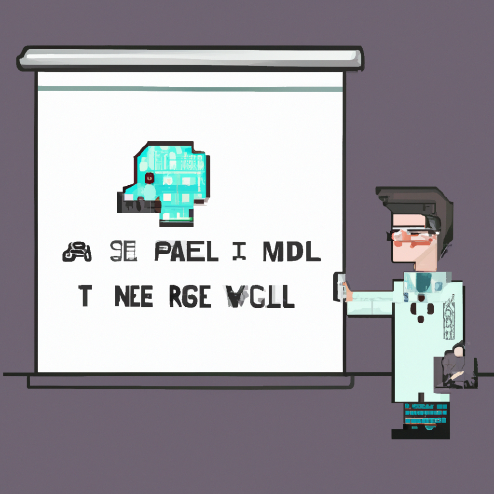

Why AI will never replace the radiologist
In the age of automation, it is easy to assume that artificial intelligence (AI) will eventually replace the radiologist. However, while AI can be used to help radiologists make more accurate diagnoses, there are still a number of reasons why AI will never replace the radiologist.
First and foremost, AI systems require a large amount of data to be trained and tested. While this data may exist in digital form, it is still often difficult for AI to properly interpret it. Additionally, AI systems are only as good as the data they are trained on, meaning that if the data is not representative of the real-world, the AI system will not be able to accurately diagnose patients.
Second, AI systems are only as good as the algorithms used to interpret the data. Radiologists are experts in reading X-rays, CT scans, and other medical imaging, and they have the experience to interpret complex medical data that AI systems may not be able to. Additionally, radiologists are able to take into account other patient information, such as symptoms and medical history, when making a diagnosis.
Finally, AI systems lack the empathy that radiologists can provide when delivering a diagnosis. Radiologists understand the emotional impact that a diagnosis can have on a patient and can provide personalized advice and support that AI simply cannot.
In short, while AI can be a valuable tool for radiologists, it cannot replace them. Radiologists have the experience and expertise to interpret complex medical data, as well as the empathy to provide personalized support to patients. AI may be able to help radiologists make more accurate diagnoses, but it will never replace them.